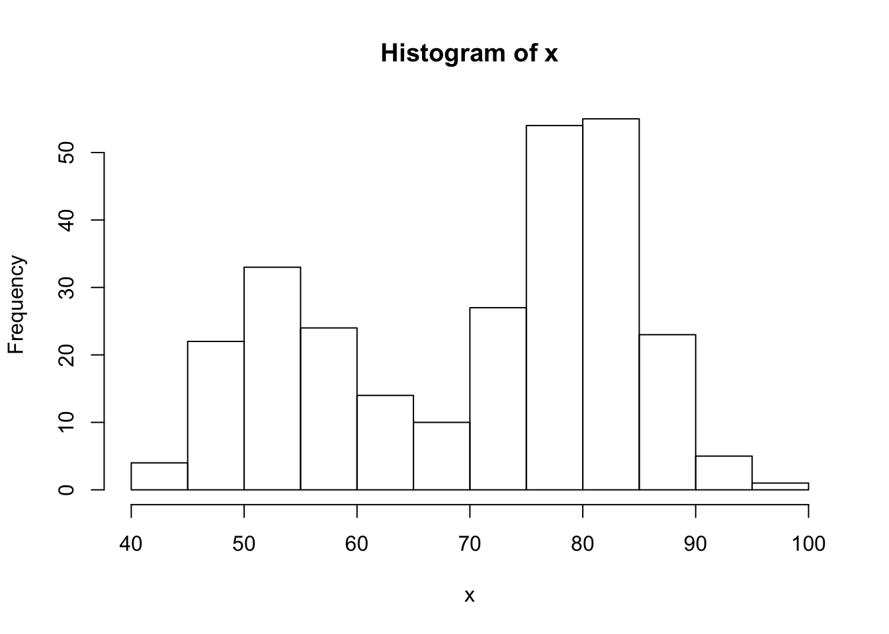
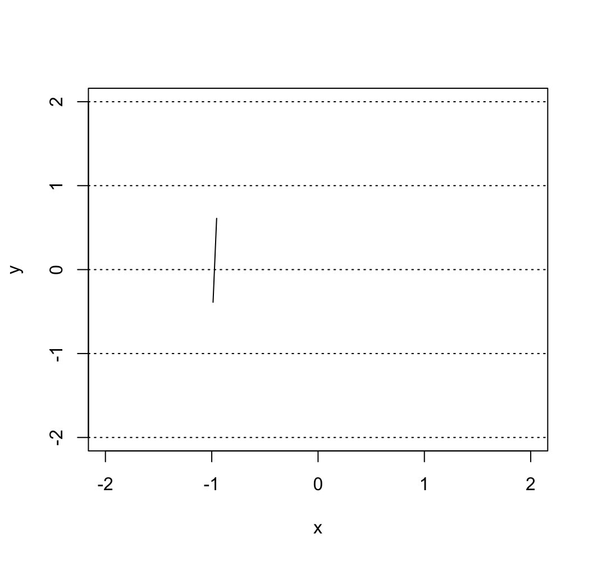
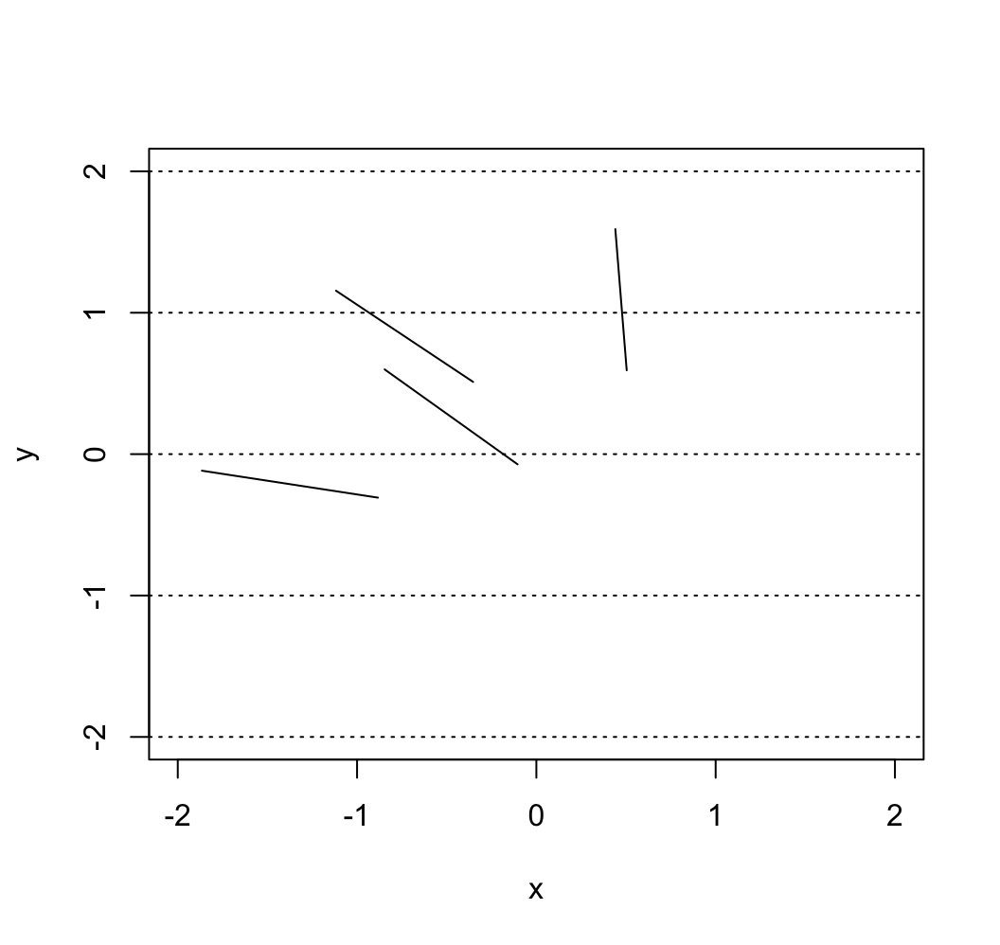
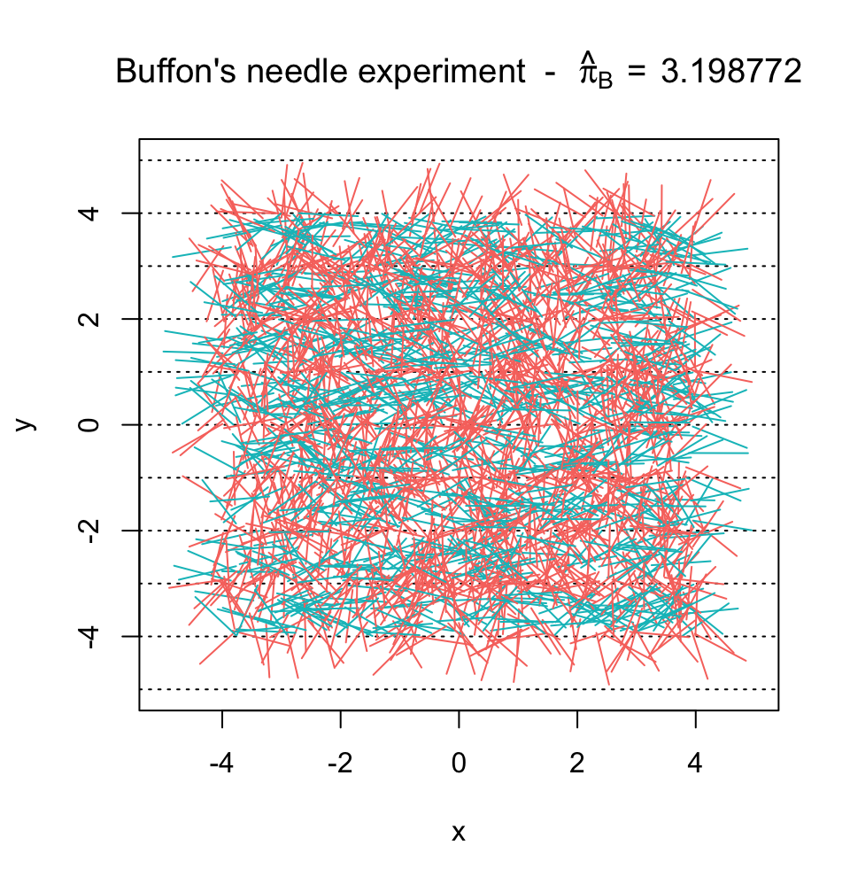
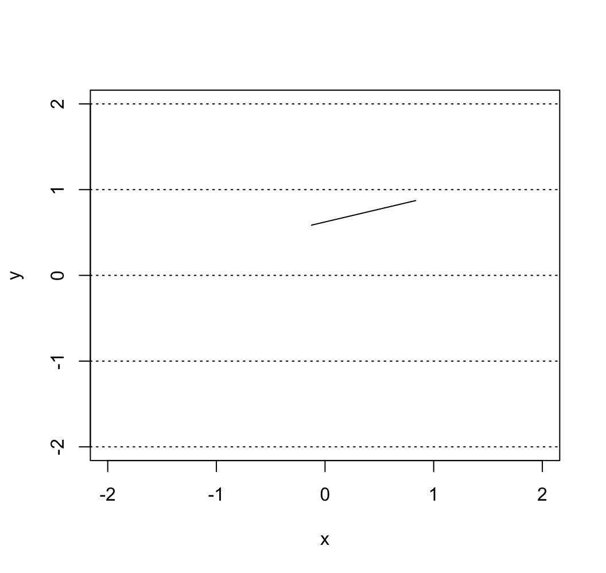

Chapter 7 Shiny
Shiny is an R package that makes it easy to build interactive web apps straight from R.
7.1 Introduction
Before building the application, we want to know to build our application, and think more like a software engineer. We want to take some input, such as parameters, and produce output. In this chapter we will build the shiny applicaion building procedure.
7.2 Step 1. R Code / Server / Backend
Before we start thinking of the web application, we want to focus on the R Code, or also commonly known as the “backend” of the application. For all the intended operations to work in the application we need to make sure that the R code that serves as the skeleton operates in the way the developer want it to be.
For example, perhaps we are trying to build an application that builds a histogram from the waiting time of the default R dataset, Old Faithful Geyser Dataset. We also want to add an option for controlling the number of bins.
For this to work, we want to build the histogram in R and test out to see if the output is what was desired initially. Below we create the default histogram.
x <- faithful[, 2]
hist(x)
Now we want to make sure to later add the option of creating more bins so the graph is customizable. In the hist() function, we see an option breaks that we can use to take in different inputs based on what the client wants.
par(mfrow = c(1,2))
# Compare the differences!
bins <- seq(min(x), max(x), length.out = 10)
hist(x, breaks = bins)
bins <- seq(min(x), max(x), length.out = 20)
hist(x, breaks = bins)
7.3 Step 2: User Interface (UI) / Frontend
The previous information goes into a part called the “server” in the shiny application. Now we want to focus on the frontend of the application, the things we “see” and options we can interact with when we open the app.
Content Creation
We want to design the application in the way that it is comprehensive and also easy to interpret. Below are some often-used options of content creation that will be beneficial to know.
| Function | Description |
|---|---|
| titlePanel() | The title of the application |
| sidebarLayout() | Creates a sidebar layout for fluidPage() |
| sidebarPanel() | Makes a sidebar menu |
| mainPanel() | Main content area for different outputs |
Input Controls
We also want to provide spaces so that the client can change any desired parameter. For example, in the above example, this would be the number of bins. Below are some input controls the developer can use.
| Function | Description |
|---|---|
| numericInput() | Number entry input |
| radioButtons() | Radio button selection |
| selectInput() | Dropdown menu |
| sliderInput() | Range slider (1/2 values) |
| submitButton() | Submission button |
| textInput() | Text input box |
| checkboxInput() | Single checkbox input |
| dateInput() | Date Selection input |
| fileInput() | Upload a file to Shiny |
| helpText() | Describe input field |
Output Render Controls
The different type of output that is shown can be designed depending on what the developer intends it to be. Examples of these options are shown below. We advise you to follow the videos and research different options that fit the desired output.
| Function | Description |
|---|---|
| plotOutput() | Display a rendered plot |
| tableOutput() | Display in Table |
| textOutput() | Formatted Text Output |
| uiOutput() | Dynamic UI Elements |
| verbatimTextOutput() | “as is”" Text Output“ |
| imageOutput() | Render an Image |
| htmlOutput() | Render Pure HTML |
7.4 Step 3: Connecting frontend and backend
Once we have the elements of user interface (UI) and server, we build the application so they come together. Look at the video for more details on this process.
7.5 Step 4: Customize
We can confidently say that shiny can be heavily customized, like how webpage applications are customized, even without explicitly using complex javascript or HTML elements.
One of such examples are a submitButton(...), in which we can run responsive output from input data using a button to initiate. More can be read from here.
Another of such example is controlling the content creation process other than the default.
7.6 Example: Monte-Carlo Integration
7.7 Example: Buffon’s needle
In 1777, the French nobleman Georges-Louis Leclerc, Compte de Buffon posed the following problem to the Royal Academy of Sciences in Paris (Georges-Louis Leclerc 1777):
Suppose that you drop a needle of unit length on a plane ruled by the lines \(y = m \; (m = 0, \pm 1, \pm 2, ...)\) - what is then the probability that the needle comes to lie in a position where it crosses one of the lines?
Compte de Buffon also provided the answer and showed that the needle will intersect lines with a predictable probability. In mathematical terms, his solution (still known today as the Buffon principle) can be stated as follows:
\[\begin{equation} \mathbb{P}(\text{intersection}) = \frac{2}{\pi}. \tag{7.1} \end{equation}\]If you are curious about the derivation of this result, click on the button below.
This proof is based on the solution of Example 4.5.8 of Grimmett and Stirzaker (2001). We start by letting the point \((X, Y)\) denote the coordinates of the center of the needle and let \(\Theta\) be the angle, modulo \(\pi\), made by the needle and the horizontal axis. Next, we define the distance from the needle’s center to the nearest line beneath it by \(Z = Y - \lfloor Y \rfloor\), where \(\lfloor Y \rfloor\) denotes the “floor” of \(Y\), i.e. the greatest integer not greater than \(Y\). Since the needle is randomly casted we have that the joint density of \((Z, \Theta)\) is given by:
\[ f_{Z, \Theta} (z, \theta) = f_{Z} (z) f_{\Theta} (\theta) = \frac{1}{\pi}, \]
for \(0 \leq z \leq 1\) and \(0 \leq \theta \leq \pi\). By drawing a diagram one can see that an interception occurs if and only if \((Z, \Theta) \in \mathcal{B}\), where
\[ \mathcal{B} = \left\{(z, \theta)\,: \;\; z \leq \frac{1}{2} \sin (\theta) \;\; \text{or} \;\; 1-z \leq \frac{1}{2} \sin(\theta)\right\}. \]
Therefore, we obtain
\[ \mathbb{P}(\text{intersection}) = \iint_\mathcal{B} \; f_{Z, \Theta} (z, \theta)\, dz \, d\theta = \frac{1}{\pi} \int_0^\pi \left(\int_0^{\frac{1}{2}\sin(\theta)} dz + \int_{1 - \frac{1}{2}\sin(\theta)}^{1} dz \right) d\theta = \frac{2}{\pi}, \]
which verifies Equation (7.1) and concludes the proof.Georges-Louis Leclerc motivation behind this problem was to design an experiment to estimate the value of \(\pi\). Indeed, if you fling a needle a large number \(B\) times onto a ruled plane and count the number of times \(S_B\) that the needle intersects a line we might be able to approximate \(\mathbb{P}(\text{intersection})\) and therefore \(\pi\). From Equation (7.1), we know that the proportion \(S_B/B\) will be “close” to the probability \(\mathbb{P}(\text{intersection})\). In fact the (weak) law of large number garantees that \(S_B/B\) converges (in probability) to \(2/\pi\), i.e. for any given \(\varepsilon > 0\),
\[ \lim_{B \rightarrow \infty} \; \mathbb{P}\left( \left| \frac{S_B}{B} - \frac{2}{\pi} \right| > \varepsilon \right) = 0. \]
Thus, the estimator
\[ \hat{\pi}_B = \frac{2B}{S_B}, \]
is a plausible estimator of \(\pi\). The Continous Mapping Theorem (see e.g. Theorem 1.14 of DasGupta 2008) can (among other) be used to show that \(\hat{\pi}\) is a consistent estimator of \(\pi\) (i.e. \(\hat{\pi}\) converges in probability to \(\pi\)). In 1777, Georges-Louis Leclerc investigated this problem and computed \(\hat{\pi}_B\) by flinging a needle 2084 times, which may consitute the first recorded example of a Monte-Carlo method (simulation?) in use.
To illustarte the convergence of our estimator we could fling \(B\) times a needle and compute the following estimators:
\[ \hat{\pi}_j = \frac{2j}{S_j}, \;\; j = k,\, ...., \,B \]
where \(k \ll B\). Then, we could create a graph with \(j\) on horizontal axis and \(\hat{\pi}_j\) on the horizontal axis. Since \(\hat{\pi}_B\) is a consistent estimator we should see that \(\hat{\pi}_j\) tends to get closer and closer to \(\pi\) as \(j\) increase. In this graph we could also superimpose several experiments (recasting the needle \(B\) times several times) to reinforce our argument.
The goal of this example is to create a shiny app to visualize and illustarte Buffon’s needle experiment. For this purpose, we will use the following steps:
- Step 1: Backend: Create all the functions needed for the backend of our app. A possible approach is to create the following functions:
cast_needle()this function randomly casts a needle on plane and returns its coordoniates as well as a binary variable to indicate if the needle crossed a line.buffon_experiment()this function performs a Monte-Carlo experiment by flinging a large number of needles using the functioncast_needle().plot.buffon_experiment()to visualize the experiment (i.e. show all the needles randomly dropped) and compute the estimator \(\hat{\pi}_B\) for the experiment at hand.
converge()to illustarte the convergence of the estimator by the construction the graph mentioned at the end of the previous paragraph.
- Step 2: Frontend: Create widgets to collect all inputs needed by the backend:
- dimension of the plane of which the needles are dropped,
- the number of needles being used, i.e. \(B\),
- number of experiments, which is needed to illustrate the convergence of the estimator,
- the seed to allow “replicable” experiments. Then, we will need to create two output “tabs”. In the first one, we “print” the result(s) of the experiment and in the second one we will illustrate the convergence of the estimator. Finally, we will need a button to “run” a new experiment.
- Step 3: Connecting frontend and backend: In this third step we will need to connect everything. Indeed, we will use the list
inputcreated by the widget define in the previous step to create the graphs to be displayed in the two output tabs. We will also need to “activate” (i.e. connect the execution of the approriated functions) the button to run a new experiment and update the “seed” after every new experiment.
Eseentially, our approach show follow the chart presented below:

In the next sections, we will discuss in details how to program each step.
7.7.1 Step 1: Backend
Let us start with the function cast_needle(). This function has a single input, i.e. the width of the (square) plane on which the needle is casted and returns a list containing:
$start: the coordinates of the one end of the needle,$end: the coordinates of the other end of the needle,$cross: a binary variable to indicate if the needle intercepts a line.
A possible implementation of this function is given below:
cast_needle = function(plane_width = 20){
needle_length = 1
available_range = plane_width/2 - needle_length
x_start = runif(2, -available_range, available_range)
angle = runif(1, 0, 2*pi)
x_end = needle_length*c(cos(angle), sin(angle)) + x_start
cross = floor(x_start[2]) != floor(x_end[2])
out = list(start = x_start, end = x_end, cross = cross)
out
}Here is an example of the output of function:
needle = cast_needle(plane_width = 4)
needle## $start
## [1] 0.3123407 -0.9171992
##
## $end
## [1] -0.3690537 -1.6491156
##
## $cross
## [1] TRUEand we could now for example provide the following graphical representation of this random cast:
plot(NA, xlim = c(-2, 2), ylim = c(-2, 2), xlab = "x", ylab = "y")
abline(h = -2:2, lty = 3)
lines(c(needle$start[1], needle$end[1]), c(needle$start[2], needle$end[2]))
Next, we consider the function buffon_experiment(). This function is based on the previous function and contains the following inputs:
B: the number of needles being casted,plane_width: the width of the (square) plane on which the needles are casted,seed: the “seed” used by the random number generator (allows to replicate results),
and returns a list containing:
$start: a \(B \times 2\) matrix containing the coordinates of the one end of the \(B\) needles,$end: a \(B \times 2\) matrix containing the coordinates of the other end of the \(B\) needles,$cross: a vector of length \(B\) containing boolean variables to indicate the crossing the each needle,$plane: the width of the (square) plane.
A possible implementation of this function is provided below:
buffon_experiment = function(B = 2084, plane_width = 10, seed = NULL){
if (!is.null(seed)){
set.seed(seed)
}
X_start = X_end = matrix(NA, B, 2)
cross = rep(NA, B)
for (i in 1:B){
inter = cast_needle(plane_width = plane_width)
X_start[i, ] = inter$start
X_end[i, ] = inter$end
cross[i] = inter$cross
}
out = list(start = X_start, end = X_end, cross = cross, plane = plane_width)
class(out) = "buffon_experiment"
out
}For example, if we consider an experiment where one cast four needles we could obtain:
experiment = buffon_experiment(B = 4, plane_width = 4)
experiment## $start
## [,1] [,2]
## [1,] -0.5357408 0.7224472
## [2,] -0.5811448 0.1706289
## [3,] 0.3828416 0.3548458
## [4,] -0.9872323 -0.7416313
##
## $end
## [,1] [,2]
## [1,] -1.0643616546 1.5713053
## [2,] 0.0002901955 0.9842218
## [3,] -0.4868643454 0.8484161
## [4,] -1.0046987030 0.2582162
##
## $cross
## [1] TRUE FALSE FALSE TRUE
##
## $plane
## [1] 4
##
## attr(,"class")
## [1] "buffon_experiment"which could be represented as
plot(NA, xlim = c(-2, 2), ylim = c(-2, 2), xlab = "x", ylab = "y")
abline(h = -2:2, lty = 3)
for (i in 1:4){
lines(c(experiment$start[i,1], experiment$end[i,1]),
c(experiment$start[i,2], experiment$end[i,2]))
}
We can now write a custom plot() function for the output of the function buffon_experiment(). This function will provide a way to visualize the experiment and will compute \(\hat{\pi}_B\), which will be shown in the title. A possible function is provided below:
plot.buffon_experiment = function(obj){
cross = obj$cross
X_start = obj$start
X_end = obj$end
B = length(cross)
cols = rev(hcl(h = seq(15, 375, length = 3), l = 65, c = 100)[1:2])
titre_part1 = 'Buffon\'s needle experiment - '
titre_part2 = ' = '
pi_hat = round(2/mean(obj$cross), 6)
titre = bquote(.(titre_part1) ~ hat(pi)[B] ~ .(titre_part2) ~ .(pi_hat))
plot(NA, xlab = "x", ylab = "y", xlim = c(-obj$plane/2, obj$plane/2),
ylim = c(-obj$plan/2, obj$plan/2),
main = titre)
abline(h = (-obj$plan):obj$plan, lty = 3)
for (i in 1:B){
lines(c(X_start[i,1], X_end[i,1]), c(X_start[i,2], X_end[i,2]),
col = cols[cross[i] + 1])
}
}Therefore, we could now run the same experiment as Georges-Louis Leclerc fliging 2084 needles almost instanteously:
experiment = buffon_experiment(B = 2084)
plot(experiment)
Finally, we can consider the function converge(). Similarly to buffon_experiment(), the function converge() has the following inputs:
B: the number of needles being casted,plane_width: the width of the (square) plane on which the needles are casted,seed: the “seed” used by the random number generator (allows to replicate results),M: the number of experiments.
The function returns the graph mentioned at the end of the previous section. A possible implementation of this function is provided below:
converge = function(B = 2084, plane_width = 10, seed = 1777, M = 12){
if (B < 10){
warning("B was changed to 10")
B = 10
}
pi_hat = matrix(NA, B, M)
trials = 1:B
cols = rev(hcl(h = seq(15, 375, length = (M+1)),
l = 65, c = 100, alpha = 1)[1:M])
set.seed(seed)
for (i in 1:M){
cross = buffon_experiment(B = B, plane_width = plane_width)$cross
pi_hat[,i] = 2*trials/cumsum(cross)
}
plot(NA, xlim = c(1,B), ylim = pi + c(-3/4, 3/4), type = "l", col = "darkblue",
ylab = bquote(hat(pi)[j]),
xlab = "j", main = "Buffon\'s needle experiment")
grid()
for (i in 1:M){
lines(trials, pi_hat[,i], col = cols[i])
}
abline(h = pi, lwd = 2, lty = 2)
}Therefore, if we were to repeat 20 times the original experiment of Georges-Louis Leclerc and compute \(\hat{\pi}_j\) for each of them we would obtain:
converge(B = 2084, M = 20, seed = 10)
which provides some illustrations of the convergence of the estimator.
7.7.2 Step 2: Frontend
We start by constructing an “empty” shiny app, i.e.
# Define UI for application
ui <- fluidPage(
# Application title
titlePanel(h4("Buffon\'s needle experiment - Inputs:")),
sidebarLayout(
sidebarPanel(
# Add inputs here!
),
mainPanel(
tabsetPanel(
# Add tabs here!
)
)
)
)
# Define server
server <- function(input, output) {
}
# Run the application
shinyApp(ui = ui, server = server)If you run this empty app you should obtain the result below:

We will start by adding the required input widgets by modifying the ui function as follows:
# Define UI for application
ui <- fluidPage(
# Application title
titlePanel(h4("Buffon\'s needle experiment - Inputs:")),
sidebarLayout(
sidebarPanel(
numericInput("plane", "Plane width:", 6, 10, 100),
numericInput("B", "Number of trials:", 100, 20, 10^6),
numericInput("M", "Number of experiments:", 1, 1, 100),
numericInput("seed", "Simulation seed", 1777, 1, 1000000),
actionButton("cast", "Let's cast some needles!", icon = icon("thumbs-up"))
),
mainPanel(
tabsetPanel(
# Add tabs here!
)
)
)
)By running the update you should now obtain:

Next, we create two output tabs in which there will be the graphs previously mentioned. This can be done by modifying again the uifunction as follows:
# Define UI for application
ui <- fluidPage(
# Application title
titlePanel(h4("Buffon\'s needle experiment - Inputs:")),
sidebarLayout(
sidebarPanel(
numericInput("plane", "Plane width:", 6, 10, 100),
numericInput("B", "Number of trials:", 100, 20, 10^6),
numericInput("M", "Number of experiments:", 1, 1, 100),
numericInput("seed", "Simulation seed", 1777, 1, 1000000),
actionButton("cast", "Let's cast some needles!", icon = icon("thumbs-up"))
),
mainPanel(
tabsetPanel(
tabPanel("Experiment", plotOutput("exp")),
tabPanel("Convergence", plotOutput("conv"))
)
)
)
)The app should now look like:

At this point, we are done with the ui function and will modify the server in the next section.
7.7.3 Step 3: Connecting frontend and backend
In this section, we will focus on the server function to produce the desired output. Let us start by “connecting” our output tabs defined in the ui function with the output in the server function. Since both outputs are graphs, we will use the function renderPlot() as follows:
server <- function(input, output) {
output$exp <- renderPlot({
# Add graph 1 here!
}, height = 620)
output$conv <- renderPlot({
# Add graph 2 here!
}, height = 620)
}If you re-run the app at this point our changes will have no visible effect. Next, we will focus on the first graph based on the functions buffon_experiment() and plot.buffon_experiment(). The first thing we will need is to (re-)run the buffon_experiment() when the user click on the “action” button. This can be done by adding the following lines to the server function:
cast = eventReactive(input$cast, {
buffon_experiment(B = input$B, plane_width = input$plane,
seed = input$seed)
})When this function is (re-)evaluated we want to update/create the first plot, which can be done by replacing this part of the server function
output$exp <- renderPlot({
# Add graph 1 here!
}, height = 620)by
output$exp <- renderPlot({
plot(cast())
}, height = 620)Therefore, your server function should now be:
server <- function(input, output) {
# Fling some needles!
cast = eventReactive(input$cast, {
buffon_experiment(B = input$B, plane_width = input$plane,
seed = input$seed)
})
output$exp <- renderPlot({
plot(cast())
}, height = 620)
output$conv <- renderPlot({
# Add graph 2 here!
}, height = 620)
}and when reloading the app you should now see:

Similarly, we do the same thing for the second graph by adding the following lines to our server function:
conv = eventReactive(input$cast, {
converge(B = input$B, plane_width = input$plan,
seed = input$seed, M = input$M)
})and replacing
output$conv <- renderPlot({
# Add graph 2 here!
}, height = 620)by
output$conv <- renderPlot({
conv()
}, height = 620)After these changes your server function should now be:
server <- function(input, output) {
# Fling some needles!
cast = eventReactive(input$cast, {
buffon_experiment(B = input$B, plane_width = input$plane,
seed = input$seed)
})
conv = eventReactive(input$cast, {
converge(B = input$B, plane_width = input$plane,
seed = input$seed, M = input$M)
})
output$exp <- renderPlot({
plot(cast())
}, height = 620)
output$conv <- renderPlot({
conv()
}, height = 620)
}NIAKETTE
and when reloading the app you should now see on the second tab:
Our next step to update the seed everything the “action” button is pushed. To do so, we will first need to add an additional input to the server function called session which will allow us to dynmically update the input direct from the server function. This can be done as follows where everytime the user click on the “action” button a new seed is randomly generated:
observeEvent(input$cast,{
updateNumericInput(session, "seed",
value = round(runif(1, 1, 10^4)))
})Therefore, your final server function is now:
server <- function(input, output, session) {
observeEvent(input$cast,{
updateNumericInput(session, "seed",
value = round(runif(1, 1, 10^4)))
})
# Fling some needles!
cast = eventReactive(input$cast, {
buffon_experiment(B = input$B, plane_width = input$plane,
seed = input$seed)
})
conv = eventReactive(input$cast, {
converge(B = input$B, plane_width = input$plane,
seed = input$seed, M = input$M)
})
output$exp <- renderPlot({
plot(cast())
}, height = 620)
output$conv <- renderPlot({
conv()
}, height = 620)
}and you will now see that the seed is now updated every time the “action” button is clicked on. The final version of the app we have just made can be found here.
Placeholder
Georges-Louis Leclerc, Compte de Buffon. 1777. Essai d’arithmétique Morale. Histoire naturelle, générale, et particulière (supplément).
Grimmett, Geoffrey, and David Stirzaker. 2001. Probability and Random Processes. Oxford university press.
DasGupta, Anirban. 2008. Asymptotic Theory of Statistics and Probability. Springer Science & Business Media.